Maker Space
A booking site for a community makerspace. I created the light-theme concept in Figma, refined and built it with Claude, then audited it against WCAG 2.2 AA and fixed every issue without losing its workshop personality.
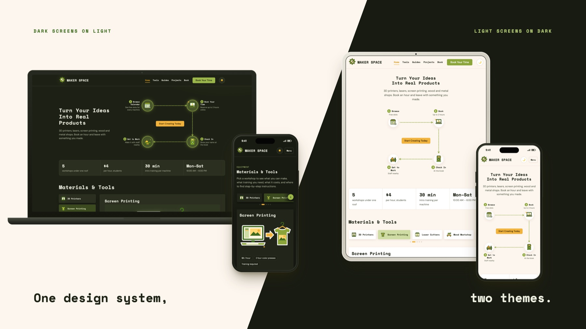
Book a machine, learn it, make something
Maker Space is a concept site for a community workshop where students and young designers book time on 3D printers, laser cutters, screen printing, wood and metal tools. Visitors pick a workshop, read how to use the machine, browse finished projects and reserve up to four 30-minute slots.
I created the core concept of the light theme in Figma: the colour palette, the visual style and the look of the main screens. I then refined it with Claude as my AI partner. Claude built the dark theme on top of my light-theme concept and wrote the code, while I set the direction, reviewed every change and tested the result.
The code lives in a public GitHub repository and deploys automatically to GitHub Pages. Every fix in this case study is a commit you can read.
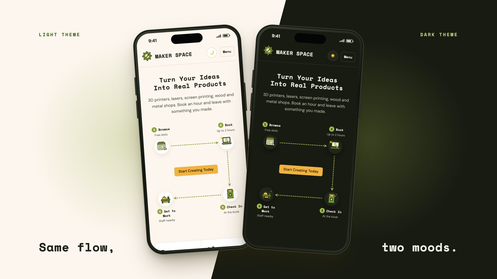
Automated scans, then a manual pass
Every view was checked in both themes at desktop (1280 px) and phone (320 px) width: 20 combinations. The audit ran in two steps.
Step 1, with Claude: Claude ran automated axe scans, measured every colour pair, tested the layout at 320 px and fixed what it found, from contrast and focus rings to headings and form errors.
Step 2, by hand: I then tested the site myself. I re-ran axe DevTools, then used Accessibility Insights for Web as my testing tool and followed its step-by-step manual assessment: I went through every page with the keyboard only and checked the heading structure. This manual pass found problems the automated scans had missed, and I had them fixed too.
Automated scan
axe with WCAG 2.2 AA rules and best-practice checks. Step 1 with Claude, re-checked by me in axe DevTools.
Contrast math
Every text and control colour pair measured against the 4.5:1 and 3:1 minimums.
Manual keyboard
My own hands-on assessment in Accessibility Insights for Web: every control used without a mouse.
Heading logic
My own check of whether the headings read like a table of contents, page by page.
Phone reflow
Each view at 320 px wide, where nothing may scroll sideways.
What the audit found
Contrast, before and after
One darker shade of the same olive fixed the buttons, filters and step numbers, so the brand still reads the same. The focus ring switched to the ink colour in the light theme.
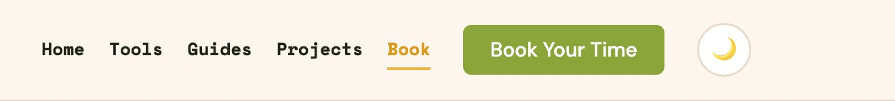
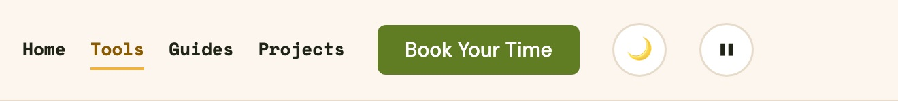
| Element | Before | After | Minimum | Change |
|---|---|---|---|---|
| Primary button text | 2.78:1 fail | 4.70:1 pass | 4.5:1 | +69% |
| Form field borders | 2.78:1 fail | 4.70:1 pass | 3:1 | +69% |
| Current menu item | 2.28:1 fail | 5.53:1 pass | 4.5:1 | +143% |
| Focus ring on the page | 1.74:1 fail | 14.82:1 pass | 3:1 | +752% |
What a mouse never shows
After Claude’s automated scans reported zero issues, my own manual keyboard pass in Accessibility Insights for Web still found problems. These are the fixes that made the site work without a mouse.
Tab order follows the screen
Theme buttons came before the menu, and four decorative step icons were extra Tab stops. Now focus moves left to right and skips decoration.
Workshop picker
Tab reaches every workshop; Space or Enter opens it and moves focus into its card.
Headings that make sense
Every view has its own H1 and page title; booking steps and machine guides became real headings.
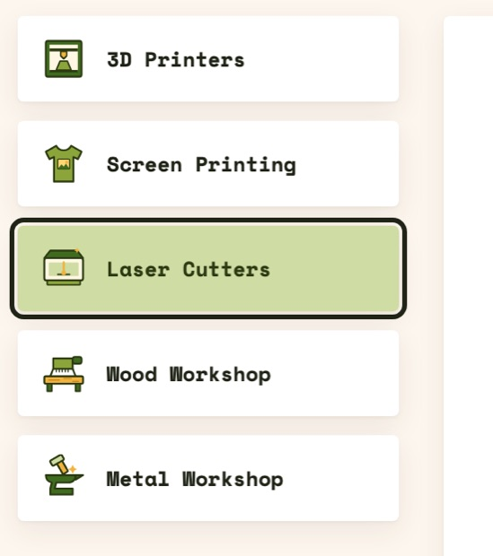
Tab order, before and after my manual pass
Each number is a Tab stop, in the order keyboard focus moves. Screenshots come from the site’s code in the commits before and after my fixes.
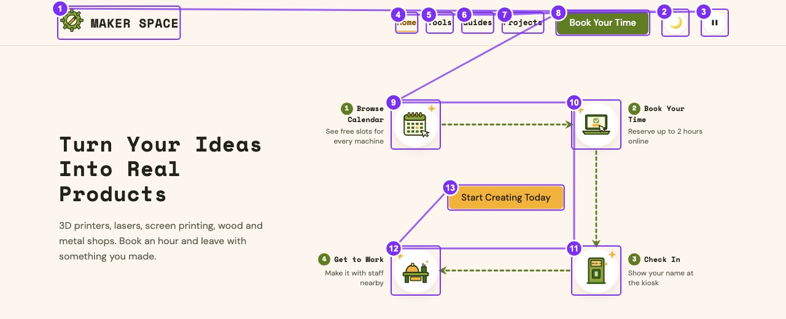
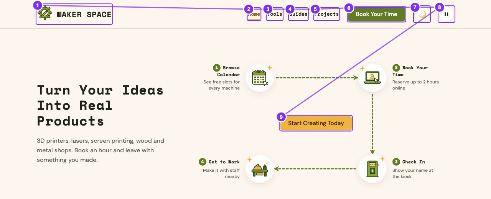
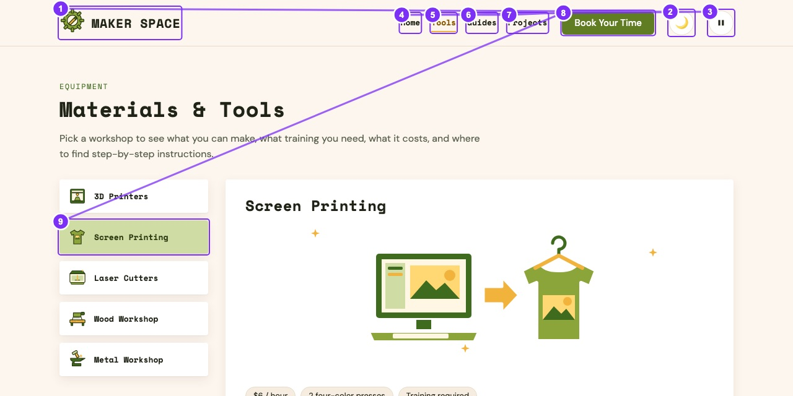
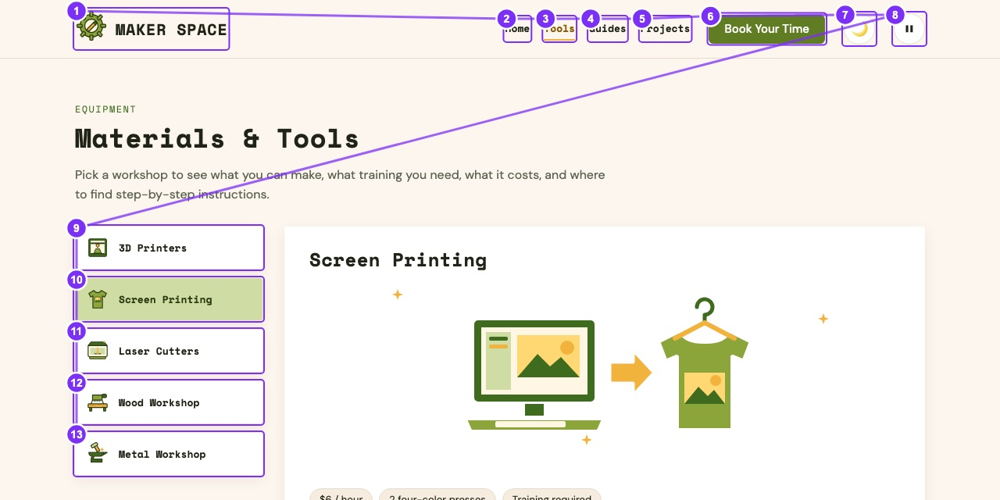
A pause button for looping animation
Before: dashed arrows, bobbing icons and sparkles looped forever. Only the operating system’s Reduce Motion setting could stop them, and most visitors never change it.
After: a pause button sits next to the theme switch. One tap stops every animation on the site, also turns off the scroll reveals, and the choice is remembered on the next visit. Screen readers announce it as “Pause animations, toggle button”, with its on or off state.
Why it matters: WCAG 2.2.2 Pause, Stop, Hide (Level A) asks for an on-page control for any motion that lasts more than five seconds. Constant movement makes reading hard for people with attention disorders and can cause dizziness or nausea for people with vestibular disorders.
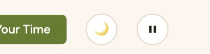
Booking errors you can hear and see
Fields that fail now turn red, are marked invalid for screen readers and are linked to the error message, which is announced. Focus jumps to the first field to fix.
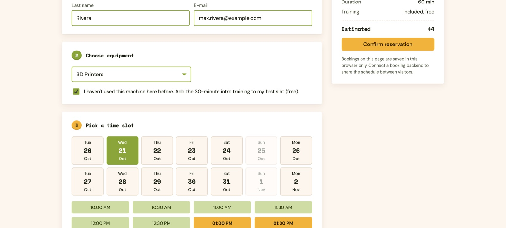
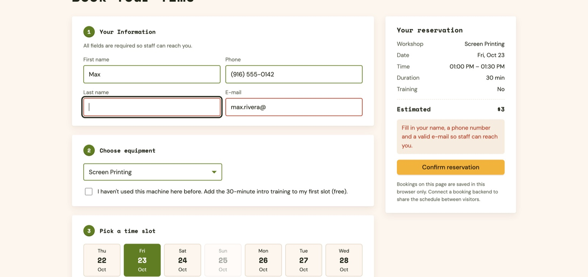
0 violations, and a manual pass that holds
axe reports no WCAG 2.2 AA violations across all 20 view, theme and width combinations, and the manual keyboard assessment in Accessibility Insights passes. Next: a screen-reader session with VoiceOver and NVDA, and a usability test with five makers.
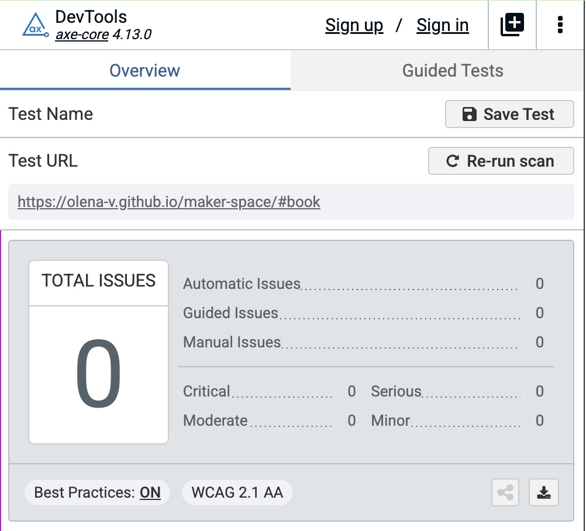
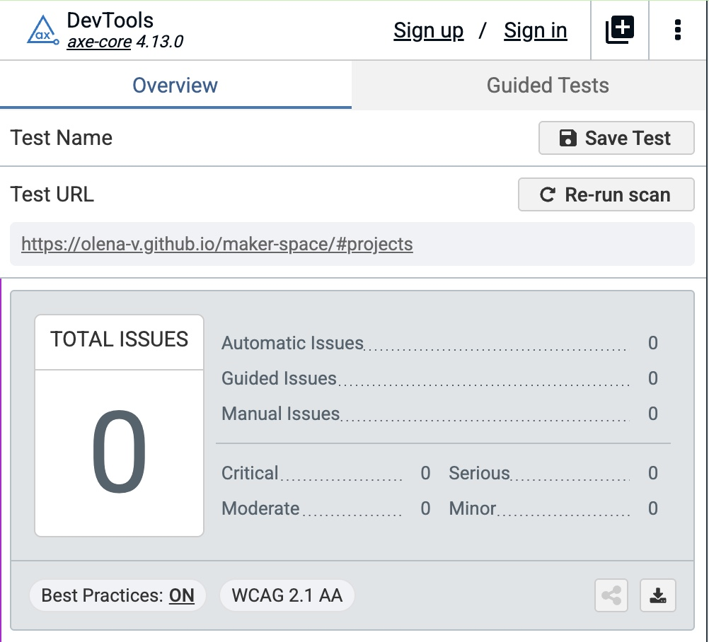
My own re-check in axe DevTools on the live site: 0 issues, with best practices on.
This is a front-end prototype: bookings are stored in each visitor’s browser. A shared booking backend is the next build step.